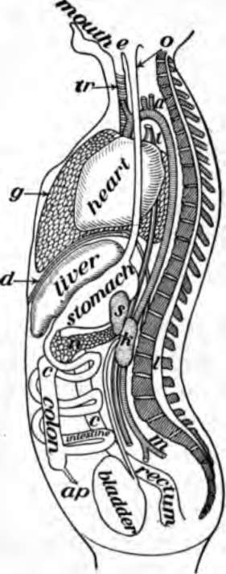
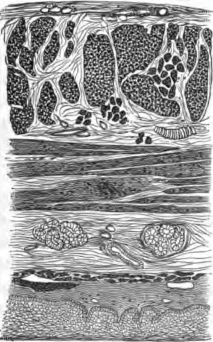
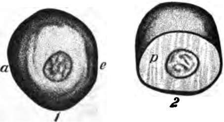
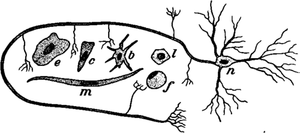
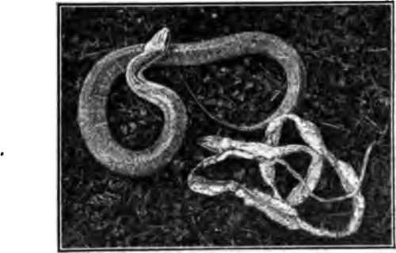

Chapter III. The Plan Of The Human Body
Description
This section is from the book "The Human Body And Health", by Alvin Davison. Also available from Amazon: The Human Body and Health.
Chapter III. The Plan Of The Human Body
Nature Of Living Things
Living plants and animals differ from all dead objects such as iron and stone by being able to take food and change it so as to form a part of their own bodies. The corn plant takes in some of its food through the leaves and some through the roots. In some of the worms and other lower animals, the food in a watery state passes directly through the skin into the body. Most animals, however, have a special opening called the mouth for the purpose of receiving food, and a sac or canal in which the food is changed to a liquid. Then there are tubes for taking the food to all parts of the body and for carrying off the waste matter.
Special structures are provided for moving the body, and there are still other structures called nerves to make all parts of the body work in proper order. These several duties such as preparing food, carrying it about in the body and moving the body, are performed by separate portions of the human body, which are named systems.
Fig. 11. The chief organs of the body from the side, a, arch of the aorta or main artery of the trunk; c, large intestine; d, diaphragm; e, throat; g, lung; k, kidney; l, spinal cord within the back bone; m, main artery dividing to go to the legs; n, pancreas; o, gullet; s, spleen; tr, wind pipe; t, main vein of body; ap, appendix.
Fig. 12. Slice of the wall of the gullet enlarged to show nature of tissues.
The Systems
There are eight chief systems forming the human body. The framework or bony system is for support and movement. The lean meat makes up much of the muscular system used in moving the bones. The mouth, stomach, intestine and whatever else helps to prepare the food for use form the digestive system. The blood tubes, conveying the food from the intestine to all parts of the body and carrying off the waste matter, constitute the blood system.
The breathing system consists of the lungs and other parts used in supplying the body with air. The skin and kidneys taking the waste matter out of the blood belong to the sewer system. The brain and nerves form the nervous system which directs the actions of all parts of the body.
The Parts Of A System
Each system is composed of several parts called organs. Each organ has a certain work to do in helping the body to keep well and perform the duties of life. The heart is the organ for sending the blood through the body, the stomach is an organ for digesting food, and a lung is an organ for breathing.
Fig. 13. A cell much enlarged. 2 is the upper half of 1, cut through the line a-e. The dark spot is the nucleus.
Nature Of An Organ
The organs when examined with a microscope enlarging their parts are seen to be made of several different substances. Each of these is called a tissue. The stomach is lined with one kind of tissue while its outer part is made of muscular tissue (Fig. 12.) Among these two is a nervous tissue, and the three are bound together by a connective tissue made mostly of fine threads.
Parts Of A Tissue
The microscope shows that the tissues are made of cells mingled with fine threads or other substance. A cell is a tiny mass of matter containing a smaller particle of matter called the nucleus. Usually each cell is surrounded by a thin membrane, the cell wall (Fig. 13).
The form of cells varies widely. The fat cells are like little balls while the muscle cells are rodlike. The nerve cells are very irregular with branching processes. Some of the cells such as those on the surface of the skin are flat like the scales of a fish and others in the intestine are shaped like tiny corks.
Character Of Cells
All plants and animals are composed of one or more cells united by threadlike fibers, or by other matter. Each of many plants and animals living in dirty water is made of a single cell. They require food and air just the same as the cells of the body and also give off waste matter. After growing to a certain size, these animals divide in the middle and each half swims away as a new animal to repeat the process the next day. In the same way new cells are formed in the body, but instead of moving apart they stick fast together.
Fig. 14. Various kinds of cells many times enlarged, n, from the brain; f, fat cell; m, muscle; e, surface of skin.
Fig. 15. A water snake which has just shed its outer skin.
Dying Parts Of The Body
Dead cells can be scraped from the skin at any time. Some animals such as frogs and snakes shed the entire dead outer skin in one piece several times each year. The cells beneath divide and thus form other cells for a new skin.
The cells within the deep parts of the body remain in place year after year, but tiny bits of them are dying constantly and passing out in the breath, the sweat and in other ways. These dead bits are burned to ashes in the body in much the same way that a match burns. The burning of anything means the union with it of a part of the air called oxygen.
Burning Or Oxidation
The union of oxygen with any other substance is oxidation. The head of a match is scratched to make it hot enough to cause the oxygen of the air to unite with it.
The living action of the cells in the body makes the oxygen there unite with the dead particles and burn them into ashes so that they can be carried out of the body through the lungs and kidneys, and not clog the organs. This burning or oxidation of the dead parts of the cells, and of the food brought there by the blood, goes on very slowly so there is no flame but enough heat to keep the body warm. By experiment, it has been found that the oxidation of an ounce of fat within the body furnishes just the same amount of heat as the burning of an ounce of fat produces when burned outside of the body.
Fig. 16. Oxidation of a match.
Practical Questions
1. How does dead matter differ from living things? 2. What animals do not have mouths? 3. What is a system in the body? 4. Name some of the systems in the body. 5. Tell what three of the systems are used for. 6. What is an organ? 7. Name five organs in the body. 8. What is a tissue? 9. Tell how the cells differ. 10. How do cells grow? 11. How are the dying parts of the body cast off? 12. What is oxidation? 13. What makes oxidation occur in the body? 14. What results from oxidation in the body? 15. Where is oxygen burned in the body?
Suggestions For The Teacher
The fact that parts of the body are dying and are being cast off may be shown in the following manner: Secure two or three frogs, or salamanders found in ponds or under stones near streams and place them in a jar containing a half inch of water. Generally within a week, large strips of shed skin may be seen floating in the water. The shed skins of caterpillars or other insects may often be found sticking to stones or trees. Any caterpillar confined in a box and fed for a few days with the leaves of the plant on which it was found will shed its skin.
Continue to:
- prev: Chapter II. Plants And Animals Related To Health
- Table of Contents
- next: Chapter IV. Food For The Body